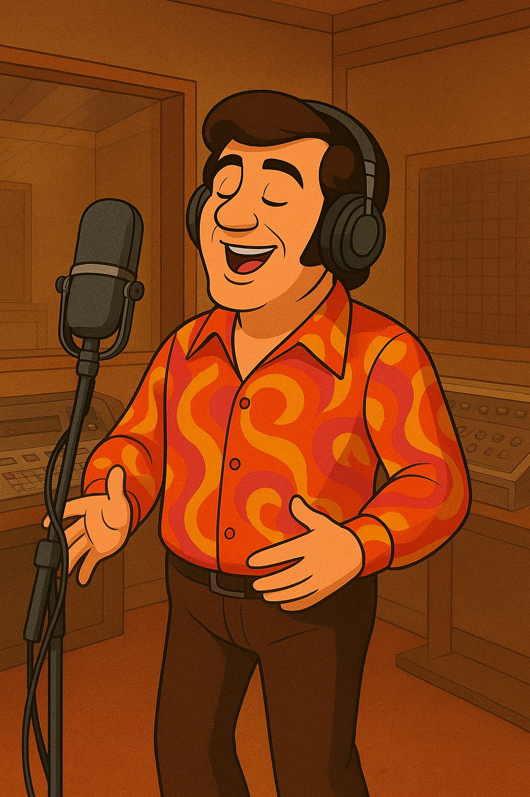
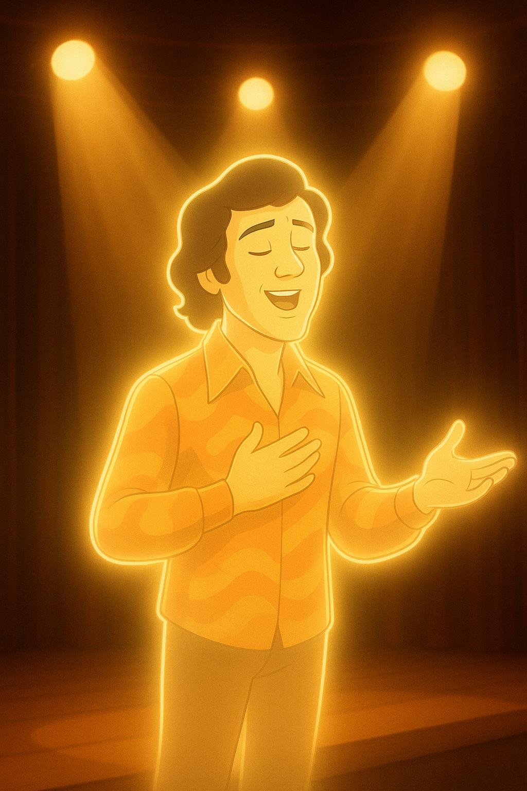

Capítulos

El Nacimiento de un Eco Musical
El capítulo describe los inicios musicales de Rodolfo Aicardi (Marco Tulio Aicardi Rivera) en su natal Galeras, Sucre, su traslado a Medellín a los 15 años, y su ascenso hasta convertirse en un ícono de la música bailable colombiana con grupos como Los Hispanos y su orquesta La Típica RA7.
Personajes: Rodolfo, Abuela

El Alma detrás de la Voz Inmortal
Explora la esencia y la fuerza interior que definieron su carrera.
Personajes: Rodolfo

Un Legado que Resuena en el Presente
El cierre de la historia muestra cómo su legado sigue vivo en las nuevas generaciones.
Personajes: Rodolfo, Mateo